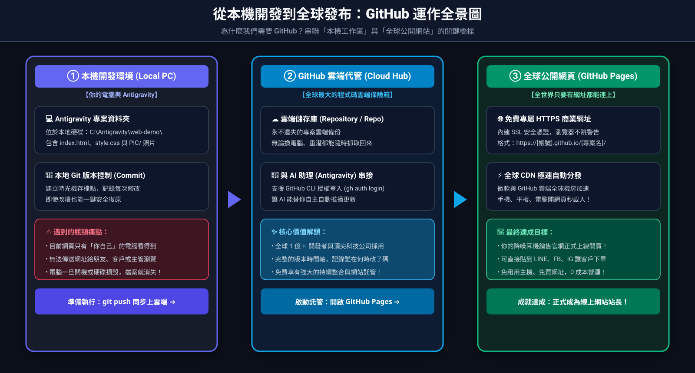
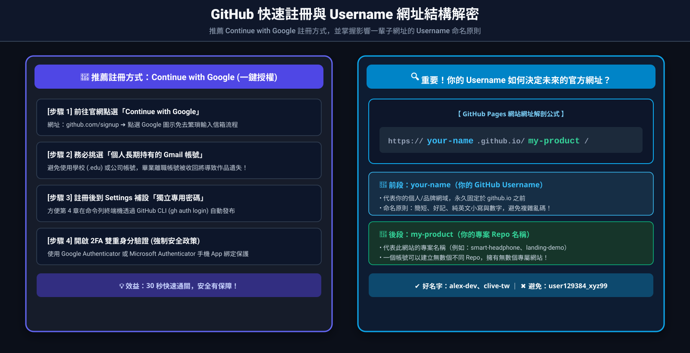
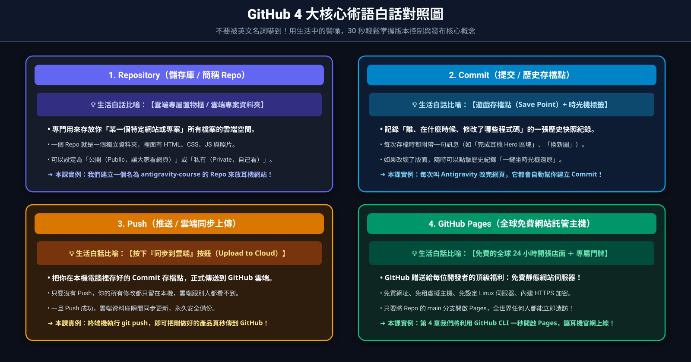

註冊 GitHub 以及 GitHub 的功能介紹
在上一章我們做出了精美的產品網頁，但它目前只躺在你的電腦裡。本章將帶你踏入全球超過一億開發者都在使用的平台 —— GitHub！
3-1 為什麼我們需要 GitHub？
GitHub 是全球最大、最具權威的程式碼代管平台（可以把它想成是「程式碼專用的 Google Drive 或雲端保險箱」+「工程師的社群履歷」）。
擁有 GitHub 帳號能為你帶來三大好處：
- 雲端備份與歷史紀錄（版本控制）： 每一次修改都能追蹤，即使不小心改壞了也能一鍵坐時光機還原。
- 免費架設網站（GitHub Pages）： 只要上傳 HTML/CSS，GitHub 就免費提供全世界可瀏覽的網址與伺服器。
- 與 AI 工具無縫整合： Antigravity 能直接跟 GitHub 雲端串接，自動為你部署專案！

▲ 圖 3-1：從本機開發到全球發布：GitHub 運作全景圖
完整展示「本機電腦 ➔ Git 提交 ➔ 雲端儲存庫 ➔ GitHub Pages 全球上線」的自動發布生態鏈！
完整展示「本機電腦 ➔ Git 提交 ➔ 雲端儲存庫 ➔ GitHub Pages 全球上線」的自動發布生態鏈！
3-2 使用 Google 帳號快速註冊流程
為降低初學者註冊門檻，我們推薦直接使用 Google 帳號（Continue with Google） 進行快速授權註冊！免去手動輸入長密碼與收認證信的等待。
步驟 2
設定你的專屬 Username（使用者名稱）
授權後，GitHub 會請你輸入一個全球唯一的 Username。這一步非常重要，請務必提醒學員注意以下命名規則！

▲ 圖 3-2：GitHub 快速註冊流程與 Username 網址結構解密
以 Google 帳號授權兩步驟快速搞定，並拆解 Username 與未來公開專案網址的直接對應關係！
以 Google 帳號授權兩步驟快速搞定，並拆解 Username 與未來公開專案網址的直接對應關係！
⚠️
使用 Google 帳號註冊 GitHub 的四大重要注意事項：
- Username 影響未來的個人網址：
你的 Username 會直接變成未來的公開網址（例如你的帳號是alex-tw，網址就會是https://alex-tw.github.io/my-product-page/）。建議使用簡短、好記的英文字母與數字，避免難辨認的亂碼或底線。 - 建議使用「個人私有」Google 帳號，而非學校/公司帳號：
許多學校（.edu）或公司機構帳號，在學生畢業或員工離職後會被收回或封鎖對外授權，可能導致未來無法登入 GitHub 遺失作品。請指導學員優先使用個人長期持有的 Gmail。 - 仍需自訂一組 GitHub 獨立密碼（方便 CLI 與 Git 使用）：
雖然平常可以用 Google 一鍵登入網頁，但在終端機執行gh auth login或使用命令列時，若沒有設定獨立密碼，有時需要改用網頁授權碼。註冊完成後，建議到 Settings ➔ Password 設定一組專用密碼。 - 檢查 Google 帳號的兩步驟驗證（2FA）：
GitHub 目前對所有用戶強制執行 2FA 雙重驗證。如果 Google 帳號遺失或被鎖定，可能會影響 GitHub 存取，請妥善保管恢復金鑰。
3-3 核心概念三分鐘搞懂
初學者最常被術語搞混，其實只要記住這四個觀念：
- Repository（儲存庫 / 簡稱 Repo）： 存放專案的地方，就像一個雲端專案資料夾。
- Commit（提交）： 存檔點。記錄「誰在什麼時候修改了什麼檔案」。
- Push（推送）： 把你電腦裡做好的存檔點，同步上傳到 GitHub 雲端。
- GitHub Pages： GitHub 提供的免費靜態網站託管服務，讓全世界的人只要有網址就能連上你的網頁。

▲ 圖 3-3：GitHub 4 大核心術語白話對照圖
用生活化的比喻（雲端資料夾、進度存檔點、上傳同步、全球展示櫥窗）快速掌握核心名詞！
用生活化的比喻（雲端資料夾、進度存檔點、上傳同步、全球展示櫥窗）快速掌握核心名詞！
3-4 必備安全設定：雙重身分驗證（2FA）
GitHub 目前強制要求所有使用者開啟 2FA（Two-Factor Authentication）。
⚠️
注意事項：
請在 GitHub 右上角頭像 ➔ Settings ➔ Password and authentication 中開啟 2FA。推薦使用手機 Authenticator App（如 Google Authenticator 或 Microsoft Authenticator）掃描綁定。
完成註冊與設定後，你已經擁有了雲端基地！下一章我們將運用 GitHub CLI，免手動點擊網頁，讓 Antigravity 一鍵將你的產品發布到全球！